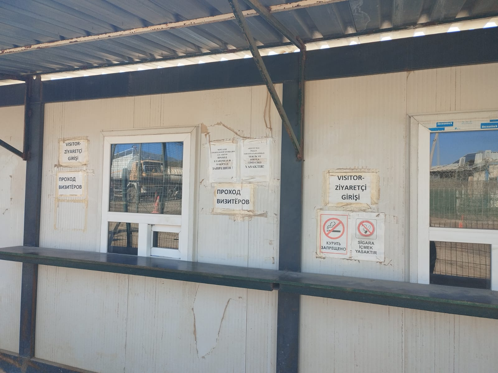
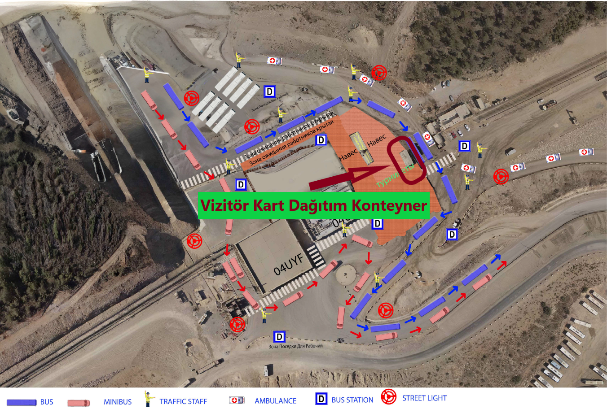
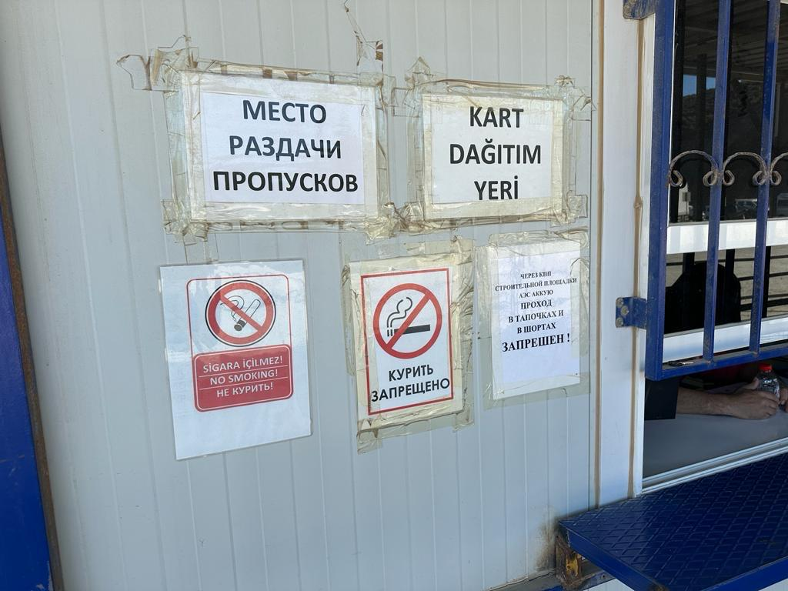

Güvenlik Ofisi, yandaki haritada kırmızı renkle işaretlenmiş olan 90VAA-91VAA ABK Akkuyu Nükleer binalarının yanında yer almaktadır.
Akkuyu Nükleer sahasına giriş yapacak ziyaretçilerin vizitör kartlarını teslim alacakları konteyner ofis, Akkuyu ana nizamiye(4 Nolu Kapı) turnike kapılarının
önünde yer almaktadır.
Sahaya giriş esnasında, aşağıda belirtilen Vizitör-Ziyaretçi konteynerine kimlik veya pasaportunuzu görevliye teslim etmeniz gerekmektedir.
Eğer vizitör giriş talebiniz onaylanmışsa, size bir vizitör giriş kartı verilecektir ve bu kart ile sahaya giriş yapabilirsiniz.
Sahadan çıkış yaptığınızda ise, vizitör kartınızı tekrar Vizitör-Ziyaretçi konteynerine iade ederek kimlik veya pasaportunuzu geri alabilirsiniz.



Basılan Akkuyu Personel Giriş Kartınızı, Araç Kartınızı veya Jeton Kartınızı, Akkuyu ana nizamiyede(4 Nolu Kapı) kırmızı ok ile gösterilen dağıtım noktasından teslim alabilirsiniz.



Akkuyu Nükleer sahasına giriş ve çıkış yapılacak tüm malzemelerin evrak kayıt ve kontrol işlemleri bu noktada yapılmaktadır. Malzemeleriniz, evraklarınızla birlikte görevliler tarafından gerekli kontrollerden geçirildikten sonra geçişe izin verilecektir.